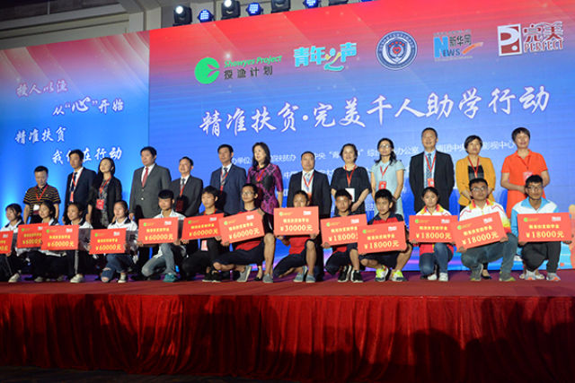

这个公益计划,让不少困难孩子圆了他们的上学梦
桂电志愿者网 日期：2017-05-26 来源：新华网

5月24日,“授渔计划 青年之声”精准扶贫完美千人助学行动在京行动。此次活动由公安部扶贫办、团中央“青年之声”综合服务办公室、共青团中央网络影视中心、中国人民公安大学、中国社会福利基金会、新华网、中央电视台团委、中央电视台社会与法频道主办,完美(中国)有限公司、中国青年网、授渔计划公益促进中心承办。
在中国欠发达地区,有些留守儿童、孤儿或家庭贫困的孩子因家庭贫困和学习薄弱,可能会面临辍学困境,难以获得良好的成长教育。教育扶贫是阻断贫困代际传递、引导青少年健康成长的有效途经。2015年,团中央“青年之声”互动社交平台联合中国社会福利基金会“授渔计划”共同发起“授渔计划·青年之声”精准扶贫一帮一助学行动,以职业教育为出发点,通过教育、技术扶贫,有效帮助困境学生实现‘学历+技能’的双丰收,并为学生成长提供后续的就业支持与再教育服务,为贫困地区经济发展培养职业人才。
团中央“青年之声”服务办公室主任、团中央网络影视中心党委书记金东在致辞中表示,中共中央国务院近日印发的《中长期青年发展规划》将“完善现代职业教育体系,推进产教融合、校企合作”纳入其中,并明确要求大力推进“青年之声”网络互动社交平台建设,使之成为服务青年发展的重要阵地。此次活动是深入贯彻“精准扶贫”指示精神、落实国家《中长期青年发展规划》的重要举措,将凝聚社会爱心,切实帮扶贫困学子成长成才,为实现中华民族伟大复兴中国梦历史重任凝聚力量。
活动现场,完美(中国)有限公司携手爱心企业、爱心人士与困境学子进行“一帮一”结对子助学,现场捐赠600余万元爱心善款,资助1000名孤儿、留守儿童和困境贫困学生有计划地完成职业教育,帮扶范围涵盖江西赣州,四川大凉山,贵州铜仁、普安、兴仁,湖北十堰、襄阳,甘肃平凉,云南昭通,河北新河,陕西,山西等,让孩子们实现重新上学梦想,掌握技能走向社会,带动家庭脱贫,共同推动精准扶贫战略多元化实施。
活动中,与会领导嘉宾为爱心企业、爱心人士颁发了荣誉证书,并为完美(中国)有限公司颁发“授渔计划公益典范伙伴”牌匾。授渔计划志愿者春雷、张天甫、茸芭莘那等艺术家现场用歌曲助力公益行动,海嘉国际双语学校、海嘉幼儿园的小志愿者们也带来了精彩的舞蹈、器乐表演。
活动最后,授渔计划志愿者代表向社会各界爱心人士发出真诚邀约,希望各位同心聚力,共同传播爱、连接爱、分享爱,共同诠释公益之美,为困境贫困学生送去温暖,用自己的实际行动帮助更多的困境学生,圆他们上学梦。
【责任编辑：成都志愿者】